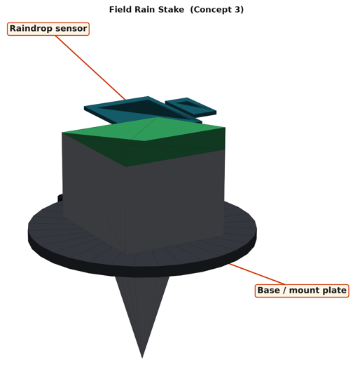

The real kit sketch for the Raindrop sensor runs here inside your Criterion B design. Edit the yellow numbers, change the real world with the slider and test your design against your own B1 function spec. No kit needed.

Rain plate at least 300 mm above the crops (spec 7.2)
0 readings saved. Open them in Lab 2 · Python data lab →